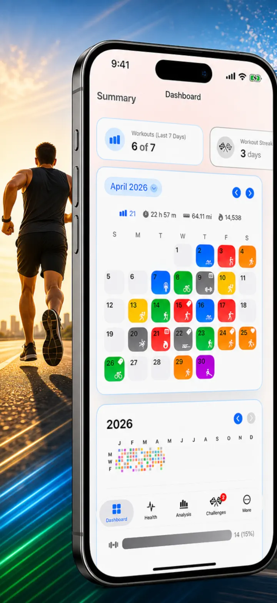
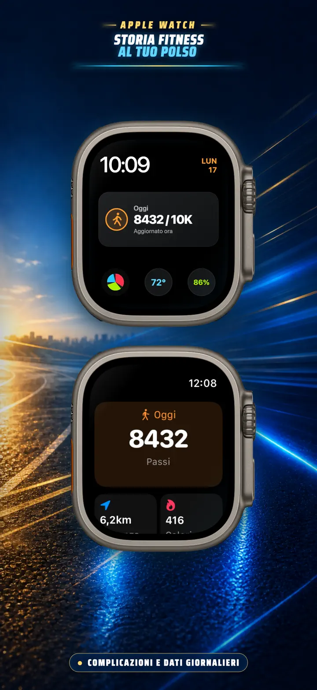
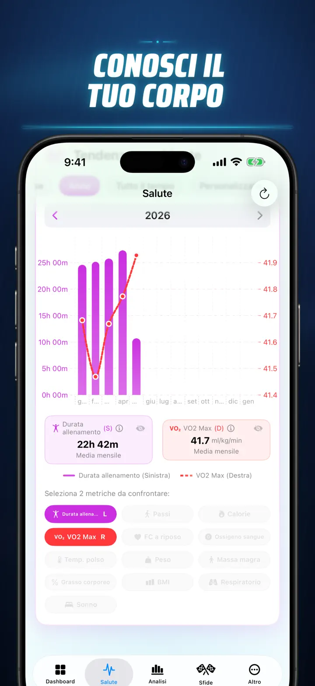
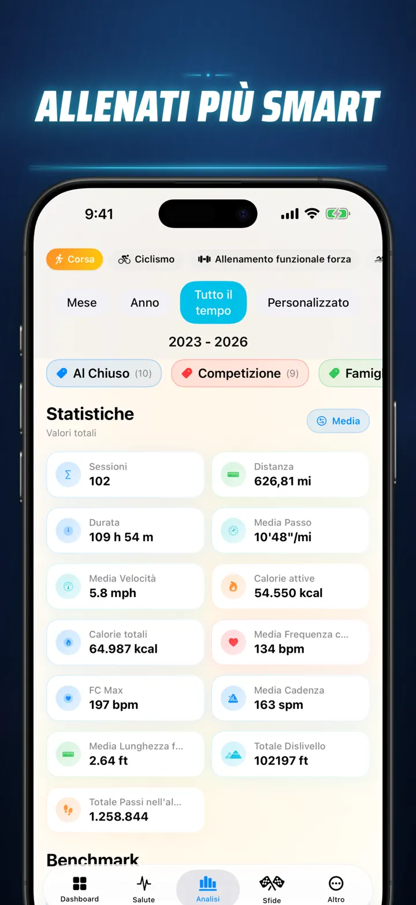
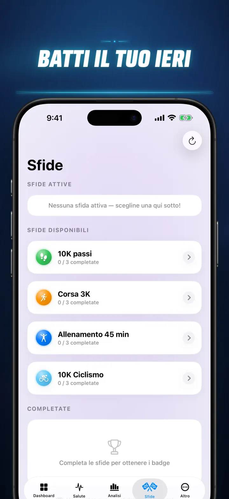
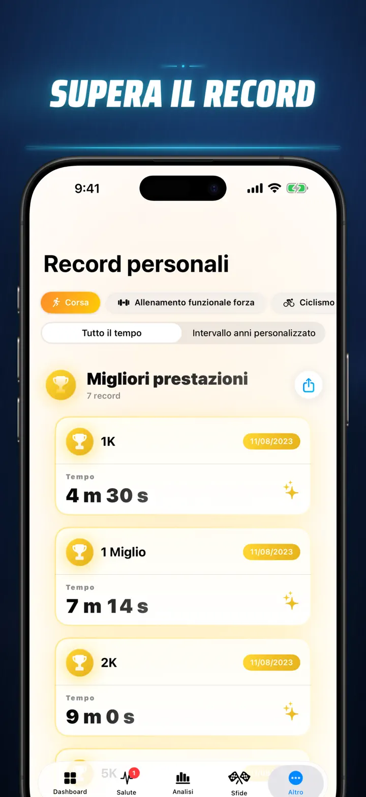
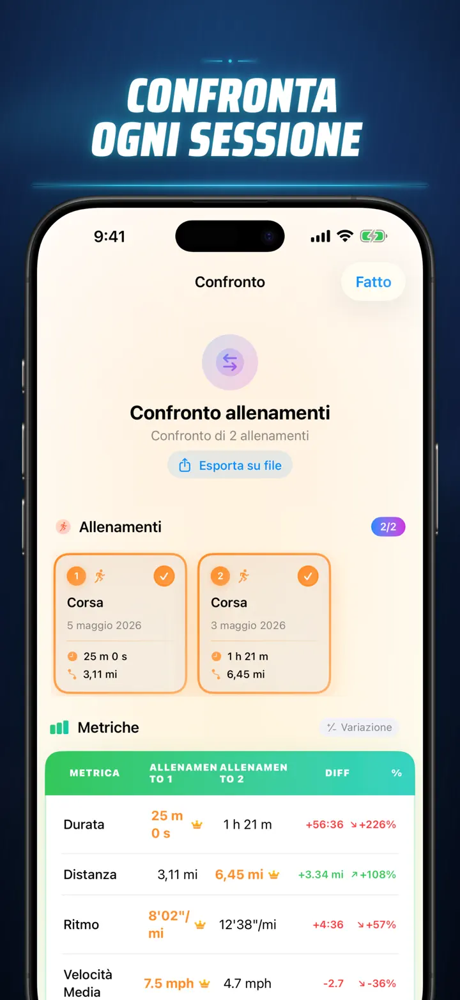
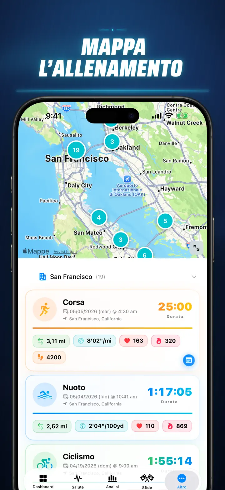
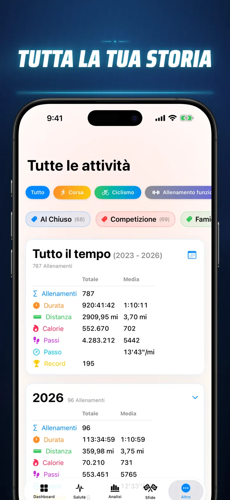

Storia Fitness
Scopri i tuoi dati di fitness
Ora su Apple Watch: i passi di oggi su qualsiasi quadrante, più una schermata Oggi con distanza, calorie e piani — direttamente da Apple Salute.
Scarica dall’App Store
Informazioni sull’app
Basta ipotesi. Inizia a sapere davvero. Storia Fitness trasforma i dati di Apple Salute nell'analisi più potente e dettagliata disponibile su iOS. Nessun account. Nessun server. Solo il tuo intero percorso fitness, visualizzato.
Che tu stia monitorando le fasi del sonno, analizzando la cadenza di corsa o inseguendo un record nella maratona, questa è la dashboard all-in-one che il tuo impegno merita.
Funziona con qualsiasi dispositivo o app che si sincronizza con Apple Salute — Apple Watch, Garmin, Polar, Suunto, Zwift e altro ancora.
ANALISI DI LIVELLO PROFESSIONALE
- Grafici di Tendenza e Benchmark: Usa i diagrammi Box-and-Whisker per visualizzare mediana, quartili e valori anomali per ogni tipo di sport.
- Analisi Granulare: Filtra la cronologia per fascia oraria, intervalli di distanza, durata, ritmo, dislivello, cadenza e lunghezza del passo.
- Classifica Tutto: Un singolo tocco classifica le metriche odierne (distanza, ritmo, FC, ecc.) rispetto all'intera cronologia. Scopri subito se hai raggiunto una prestazione "Top 15%".
- Grafico dei Contributi: Una heatmap in stile GitHub dell'intera cronologia dei tuoi allenamenti. Capovolgila per vedere le statistiche giornaliere dettagliate.
DETTAGLI ALLENAMENTO REINVENTATI
- Mappe Intelligenti: Colora i percorsi outdoor in base a velocità, altitudine o zone di frequenza cardiaca. (Include correzione mappa Cina).
- Analisi Split Approfondita: Visualizza gli split per KM o miglia con ritmo, altitudine, FC e cadenza per ogni singolo giro.
- Zone di Frequenza Cardiaca: Visualizza il tempo trascorso nelle Zone personalizzate 1–5 basate su età e frequenza cardiaca a riposo.
- Contesto Ricco: Aggiungi foto, note in rich text, valutazioni dello sforzo (1–10) e tag personalizzati ad ogni allenamento.
CENTRO DI COMANDO SALUTE COMPLETO
- Tutto ciò che il tuo Apple Watch misura, visualizzato in un unico posto con tendenze giornaliere, settimanali e annuali:
- Salute Cardiovascolare: Frequenza cardiaca a riposo, VO2 Max (aggiustato per età), ossigeno nel sangue e frequenza respiratoria.
- Composizione Corporea: Peso, % grasso corporeo, massa magra e BMI con indicatori di tendenza.
- Attività e Recupero: Passi (con dettaglio orario), calorie attive vs. basali e deviazioni della temperatura del polso.
- Monitoraggio Sonno Avanzato: Fasi profonda, core, REM e veglia visualizzate notte per notte.
- Sovrapposizioni Correlate: Sovrapponi più metriche di salute per vedere come il sonno influenza la frequenza cardiaca o come il peso impatta il VO2 Max.
CONFRONTA E COMPETI
- Confronto Allenamenti: Seleziona fino a 10 allenamenti da confrontare fianco a fianco. Visualizza le variazioni percentuali (es. "+1,5% più veloce") per ogni metrica, per split!
- Esportazione Confronto: Vuoi analizzare con altri strumenti? Esporta il confronto degli allenamenti!
- Record Personali: Monitoraggio automatico per 1K, 5K, 10K, mezza maratona, maratona e distanze personalizzate. Conquista trofei oro, argento e bronzo.
- Timeline della Storia: Un feed cronologico di ogni traguardo, record e allenamento che hai completato.
I TUOI DATI, OVUNQUE
- Mappa Globale: Visualizza ogni luogo in cui ti sei allenato su una mappa mondiale interattiva raggruppata.
- Esportazione Potente: Esporta l'intera cronologia (o intervalli personalizzati) in CSV o JSON. Include dati split completi, metriche corporee e metadati.
- Sincronizzazione iCloud: Preferiti, tag, note e valutazioni si sincronizzano istantaneamente su tutti i tuoi dispositivi.
- Privacy al Primo Posto: Nessun server nascosto. I tuoi dati restano sul tuo dispositivo e nel tuo iCloud privato.
- Il tuo sudore racconta una storia. È ora di leggerla. Scarica Storia Fitness oggi.
Scarica Storia Fitness e scopri ogni dettaglio!
Privacy Policy: https://masawata.net/privacy-policy.html Terms Of Service: https://www.apple.com/legal/internet-services/itunes/dev/stdeula/
Screenshot








Storia Fitness
Ora su Apple Watch: i passi di oggi su qualsiasi quadrante, più una schermata Oggi con distanza, calorie e piani — direttamente da Apple Salute.
Scarica dall’App Store